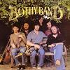

Celtic Lyrics Corner > Artists & Groups > Bothy Band > Old Hag You Have Killed Me > Tiocfaidh An Samhraidh
|  | Tiocfaidh An Samhraidh |
| Credits : | Traditional; arranged by the Bothy Band |
| Appears On : | Old Hag You Have Killed Me |
| Language : | Gaeilge (Irish Gaelic) |
| Other Versions : |
"
Tiocfaidh An Samhradh
" on Altan's album
Another Sky
" Tiocfaidh An Samhradh " on The Cassidy's album Singing From Memory |
| Lyrics : | English Translation : |
| Tiocfaidh an samhradh | Summer will come |
| Agus fásfaidh an féar | Grass will grow |
| Tiocfaidh an duilliúr ghlas | Green leaves will sprout |
| Ar bharr na gcraobh | On the treetops |
| Tiocfaidh mo rúinsearc | My true love will come |
| Le bánú an lae | At the break of day |
| Agus buailfidh sí túin suas | And strike up a tune |
| Le cumha 'mo dhiaidh | Out of lonliness for me |
| Scairt mé aréir | I called last night |
| Ag an doras thall | At the house yonder |
| Scairt mé aríst | I called again |
| An raibh mo rún le fáil | To see if my true love was there |
| Dúirt a daidí liom | Her father said |
| Nach raibh sí ann | She wasn't around |
| Nó gur éaluigh sí aréir | That she eloped last night |
| Leis an buachaill donn | With the brown-haired boy |
| Brón ar an fharraige | A curse on the sea |
| Mar is sí atá mór | Because it's so vast |
| 'Sí atá ag dul idir mé | It goes between me |
| Is mo mhíle stór | And the one that I love |
| Siúlfaidh mé na bailte seo | I'll walk these towns |
| Agus siúlfaidh mé na róid | And tramp the road |
| Agus dheamhan bean a phósfas mé | And no woman will I marry |
| No go dtéim faoi fhód | 'Til I lie in my grave |
| Tiocfaidh an samhradh | Summer will come |
| Agus fásfaidh an féar | Grass will grow |
| Tiocfaidh an duilliúr ghlas | Green leaves will sprout |
| Ar bharr na gcraobh | On the treetops |
| Tiocfaidh mo rúinsearc | My true love will come |
| Le bánú an lae | At the break of day |
| Agus buailfidh sí túin suas | And strike up a tune |
| Le cumha 'mo dhiaidh | Out of lonliness for me |